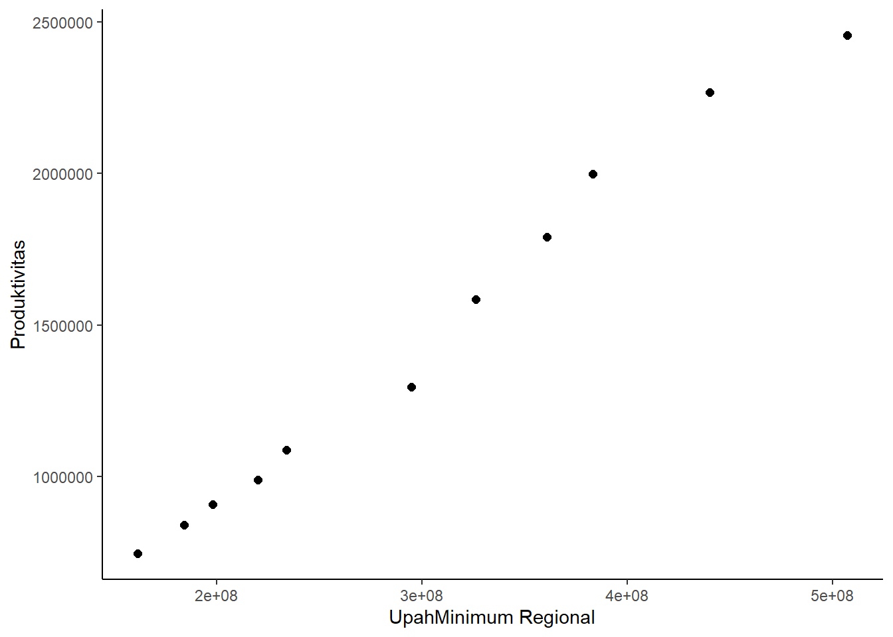

Pengaruh Produktivitas Tenaga Kerja di Indonesia terhadap Upah Minimum Regional di Indonesia
Metode Penelitian Politeknik APP Jakarta
Author
Haura Ardini
Published
January 20, 2022
1 Pendahuluan
1.1 Latar belakang
Seiring berjalannya waktu di era revolusi industri 4.0 produktivitas tenaga kerja di Indonesia harus dipacu agar bisa bersaing dengan negara-negara lain. Produktivitas tenaga kerja adalah tingkat kemampuan tenaga kerja dalam menyelesaikan suatu pekerjaan dengan volume tertentu dalam batas waktu tertentu dalam kondisi standar dan diukur dalam satuan volume/hari-orang.
Pengertian produktivitas bila dituliskan dalam suatu bentuk perumusan matematis adalah sebagai berikut
Produktivitas = Satuan Hasil Kerja/ Satuan Waktu Selama 25 tahun sejak 1990, tingkat produktivitas tenaga kerja tumbuh 3,1% per tahun mencapai USD 24,3 ribu. Menurut data The Conference Board dalam Total Economy Database, produktivitas per pekerja Indonesia pada 2017 telah menembus USD24,6 ribu.
Peringkat produktivitas tenaga kerja di Indonesia menurut data APO (Asian Productivity Organization) mencatat Indonesia berada di posisi kesebelas dari 20 negara yang produktivitas pekerjanya baik. Produktivitas tenaga kerja merupakan salah satu aset penting perusahaan karena, hal ini berkaitan dengan pengeluaran biaya upah tenaga kerja. Produktivitas tenaga kerja dipengaruhi oleh faktor tingkat upah dan sistem bonus, perusahaan mengharapkan jika Upah Minimum Regional meningkat maka, produktivitas tenaga kerja juga meningkat. Selain itu, tingkat upah yang diberikan dapat membangkitkan semangat dan para pekerja bisa meningkatkan performa kerjanya pada suatu perusahaan. Tidak dapat dipungkiri bahwa masih ada faktor lain yang memengaruhi tingkat produktivitas tenaga kerja di Indonesia. Tetapi, penelitian pada artikel ini akan menyinggung keterkaitan produktivitas tenaga kerja dengan upah minimum regional.
1.2 Ruang lingkup
Tingkat produktivitas tenaga kerja dengan upah minimum regional di Indonesia secara keseluruhan yang akan dibahas dalam ruang lingkup artikel kali ini. Data pada artikel ini didapat dari BPS (Badan Pusat Statistik). Yang nantinya akan dibandingkan dengan data UMR di Indonesia dalam kurun waktu 10 tahun.
1.3 Rumusan masalah
Bagaimana produktivitas tenaga kerja di Indonesia?
Apakah UMR memengaruhi produktivitas tenaga kerja di Indonesia?
Apakah semakin baik produktivitas tenaga kerja di Indonesia berpengaruh terhadap kenaikan Upah Minimum Regional
1.4 Tujuan dan manfaat penelitian
Tujuan dari penulisan penelitian ini untuk mengetahui bagaimana tingkat produktivitas tenaga kerja di Indonesia dengan UMR selama kurun waktu 10 tahun, mengetahui keterkaitan produktivitas tenaga kerja dengan UMR, Memberikan informasi seberapa besar produktivitas tenaga kerja dari tahun ke tahun selama 10 tahun terakhir. Manfaat dari penelitian ini dapat menjadi landasan agar dapat mengatur upah minimum regional (UMR) dengan tingkat produktivitas tenaga kerja seimbang sebagaimana diharapkan.
1.5 Package
Ini tidak wajib ada di packages yang digunakan antara lain sebagai berikut:
Dilansir dari kompas.com UMR merupakan singkatan dari upah minimum regional yang merupakan suatu standar minimum yang ditetapkan oleh pemerintah untuk digunakan bagi para pelaku industri pengusaha dalam memberikan upah kepada tenaga kerjanya. UMR diatur agar para pelaku usaha tidak semena-mena terhadap pekerjanya. Penentuan UMR telah diatur dalam Peraturan Menteri Tenaga Kerja dan Transmigrasi No. 07/Men/2013 tentang Upah Minimum. UMR di tiap daerah/provinsi berbeda-beda dikarenakan, peraturan pemerintah setempat.
Dilansir dari Peraturan Menteri Tenaga Kerja No 01 Tahun 1999 tentang upah minimum Dalam Permenaker tersebut, UMR dibedakan menjadi 2, yakni:
Upah Minimum Regional Tingkat I (UMR Tk I) atau upah minimum yang berlaku di satu provinsi.
Upah Minimum Regional Tingkat II (UMR Tk II) atau upah minimum yang berlaku di daerah kabupaten/kotamadya atau menurut wilayah pembangunan ekonomi daerah atau karena kekhususan wilayah tertentu.
UMR terdiri dari upah pokok termasuk tunajangan tetap, dan ditetapkan oleh menteri selambat-lambatnya 40 hari sebelum tanggal berlakunya upah. Peninjauan UMR selambat-lambatnya 2 tahun sekali.
3 Metode penelitian
3.1 Data
Tabel.1 Produktivitas
Tahun
Produktivitas
2008
Rp 161,396,000.00
2009
Rp 184,202,000.00
2010
Rp 197,969,000.00
2011
Rp 219,941,000.00
2012
Rp 234,010,000.00
2013
Rp 294,778,000.00
2014
Rp 326,116,000.00
2015
Rp 360,909,000.00
2016
Rp 383,297,000.00
2017
Rp 440,180,000.00
2018
Rp 507,370,000.00
Tabel.2 UMR
Tahun
UMR
2008
Rp 745,709.00
2009
Rp 841,530.00
2010
Rp 908,824.00
2011
Rp 988,829.00
2012
Rp 1,088,903.00
2013
Rp 1,296,908.00
2014
Rp 1,584,391.00
2015
Rp 1,790,342.00
2016
Rp 1,997,819.00
2017
Rp 2,268,874.00
2018
Rp 2,455,662.00
dat <-read_excel('C.xlsx')ggplot(data=dat,aes(x=Produktivitas, y=UMR)) +geom_point(color="black", size=2) +labs(tittle ="Pengaruh Produktivitas Tenaga Kerja di Indonesia terhadap Upah Minimum Regional di Indonesia" ,x="UpahMinimum Regional",y="Produktivitas") +theme_classic()

3.2 Metode analisis
Metode yang dipilih adalah regresi OLS dengan variabel 2 independen. Penelitian ini merbaksud mencari hubungan antara produktivitas tenaga kerja dan upah minimum regional. Spesifikasi yang dilakukan adalah:
\[
y_{t}=\beta_0 + \beta_1 x_t+\mu_t
\] di mana \(y_t\) adalah upah minimum dan \(x_t\) adalah produktivitas tenaga kerja.
4 Pembahasan
4.1 Pembahasan masalah
Pada laporan ini penelitian yang digunakan yaitu OLS, penelitian disini hanya akan menghubungkan dan menampilkan produktivitas tenaga kerja di Indonesia tahun 2008-2018 dan tingkat UMR di Indonesia tahun 2008-2018. Kedua data tersebut diregresi dan menampilkan data akhir atau data gabungan seperti di bawah ini.
F-statistic: 733.2 on 1 and 9 DF, p-value: 6.192e-10
5 Kesimpulan
Kesimpulan pada penelitian ini adalah, pekerja di kebanyakan perusahaan melamar pekerjaan dengan mempertimbangkan UMR di masing-masing daerah. Sehingga, banyak pelamar kerja mendatangi daerah/kota yang memiliki UMR tinggi. UMR juga memiliki pengaruh signifikan terhadap produktivitas tenaga kerja dikarenakan, semakin tinggi UMR di suatu daerah maka, akan semakin meningkat performa kerja tenaga kerja tersebut sehingga, tingkat produktivitasnya naik.